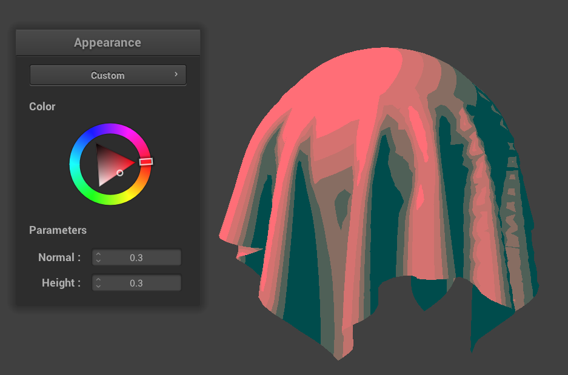

CS184/284A Spring 2025 Homework 4 Write-Up
Link to webpage: https://cal-cs184-student.github.io/hw-webpages-tripingulation-web/hw4/index.html
Link to GitHub repository: https://github.com/cal-cs184-student/sp25-hw4-tripingulation-4
Overview
In this homework, we implemented a cloth simulation using masses and springs, numerical integration, collision handling, self-collision detection, and shaders. The simulation involved modeling the cloth as a grid of point masses connected by springs, and we applied different physical properties (e.g., stiffness, density, damping) to study their effects on the cloth’s behavior.
Some challenges were implementing numerical integration techniques for stable simulation, managing interactions between the cloth and other objects, and handling complex self-collisions. We also explored multiple different shading techniques to render the cloth realistically, including Blinn-Phong shading, bump mapping, displacement mapping, and mirror shaders.
From completing this homework, we gained a deeper understanding of physics-based simulations, numerical methods, and how to leverage shaders for realistic rendering. We also learned the practical effects of physical parameters like the spring constant, density, and damping, which significantly altered the cloth's behavior and gave us insight into the material properties of physical objects.
Part 1: Masses and springs

Part 2: Simulation via numerical integration
With a high \(k_s\), the cloth is very stiff and doesn't bend easily. When it hits the sphere, it jerks into a bent state but tries to keep parts straight.
With a very low \(k_s\), the cloth is very flexible. When it hits the sphere, it wraps around it and wiggles a bit.
Compared to the default parameters, these stop moving more quickly and more slowly respectively.
|
|

|
Density has the opposite effect as \(k_s\). With a high density, the cloth bends more and with a low density it does not bend. The effect compared to the default parameters is opposite as to \(k_s\).
|
|
|
With high damping, the cloth comes to a rest slowly and is very symmetric, with no wiggling.
With low damping, the cloth bounces a lot and hits itself, coming to rest in an asymmetric position.
Compared to the default parameters,
|
|
|
Finally, here is a screenshot of our shaded cloth from scene/pinned4.json in its final resting state, with the default parameters.
Part 3: Handling collisions with other objects
For collisions with spheres and planes, we checked every PointMass to see if it collided with something:
for (PointMass& p : point_masses) {
for (CollisionObject* c: *collision_objects) {
c->collide(p);
}
}
For actually checking for collisions, we compute the intersection point, tangent_pt, and compute the correction vector needed to be applied to the point mass's last_position in order to reach the tangent point. For example, here's the sphere collision method.
void Sphere::collide(PointMass &pm) {
if ((pm.position - origin).norm2() <= radius2) {
Vector3D tangent_pt = origin + radius * (pm.position - origin).unit();
Vector3D correction = tangent_pt - pm.last_position;
pm.position = pm.last_position + (1 - friction) * correction;
}
}
Here is our shaded cloth from scene/sphere.json in its final resting state on the sphere using the default \(k_s = 5000\) as well as with \(k_s = 500\) and \(k_s = 50000\). The result is mostly just a change in stiffness: the lower \(k_s\) wraps around the sphere more and folds more.
We also have a screenshot of our shaded cloth lying peacefully at rest on the plane. (We took that screenshot after implementing shaders.)
|
|
|
|
|
|
Part 4: Handling self-collisions
For Part 4, we implemented self-collisions using a spatial hash map containing PointMasses stored by their hashed position (build_spatial_map). Then we made the self_collide method to
build_spatial_map();
for (PointMass& p : point_masses) {
self_collide(p, simulation_steps);
}
Here is the self_collide method: if two PointMasses are within 2*thickness distance from each other, compute a correction vector that can be applied so that they would be 2*thickness apart. Then average over the corrections and scale down by the step size.
float hash = hash_position(pm.position);
Vector3D correction = Vector3D();
size_t count = 0;
for (PointMass* p : *map[hash]) {
if (p != &pm) {
Vector3D v = p->position - pm.position;
if (v.norm2() < 4 * thickness * thickness) {
correction += (2 * thickness - v.norm()) * v.unit();
count++;
}
}
}
if (count > 0) {
pm.position -= correction / count / simulation_steps;
}
Here are 3 screenshots showing how the cloth falls and folds on itself.
When we vary \(k_s\), low \(k_s\) causes it to bunch up more and fall faster and tighter, while high \(k_s\) has the opposite effect - more spread out and a slower fall.
|
|

|
|
|
|
When we vary density, it has the opposite effect, as expected.
|
|
|
Part 5: Shaders
A shader program is a set of instructions written in a shading language like GLSL, which runs on the GPU to control rendering in a way that gets objects colored, usually in a realistic manner.
The vertex shader processes each vertex of a 3D model, transforming its position into screen space and computing attributes like normals and texture coordinates needed for lighting calculations.
The fragment shader takes in these attributes, and operates on each pixel or fragment of the shape. It uses this data to compute the final pixel color, taking into account lighting models such as Blinn-Phong, textures, and material properties.
The Blinn-Phong model adds up three lighting components: diffuse, specular, and ambient. Ambient light simulates indirect lighting; diffuse light depends on the angle between the light direction and the surface normal, giving a matte appearance; and specular light simulates shiny highlights. Blinn-Phong uses a *halfway vector*, the normalized vector halfway between the light direction and the view direction, to compute the specular term. This makes it visually smooth while staying efficient, especially for surfaces with many small highlights. We chose a blue color for the ambient light to add some visual interest.
|
|
|
|
|
|
Our Blinn-Phong shader also supports user color input through the GUI.
Here is a custom texture:
Here is bump and displacement mapping.
Bump mapping alters the surface normals at each pixel without changing the actual geometry of the surface. This means that the object’s shape is not modified, but lighting is affected, giving the illusion of depth and texture.
In constrast, displacement mapping does actually modify the vertices of the surface based on a displacement map, which results in real physical changes to the surface. It therefore produces more realistic depth effects but is computationally more expensive than bump mapping.
We see here in the resulting renders that the displacement rendering is more physically altered than bump mapping, at both rendering resolutions. However, at the lower resolution, displacement mapping is less smooth and more jagged, since there are less vertex normals so modifying them has a less subtle effect.
|
Bump mapping, -o 128 -a 128 |
|
|
Bump mapping, -o 16 -a 16 |
|
|
Displacement mapping, -o 128 -a 128 |
|
|
Displacement mapping, -o 16 -a 16 |
Here is the mirror shader:
Custom shader
For our custom shader we created a toon shader that interpolates colors in a perceptually uniform way. The light color can be chosen through the GUI and the shadow color can be chosen by inputting numbers into the normal and height fields of the GUI (e.g. inputting 12.34, 0.56) will choose the RGB colour (0.12, 0.34, 0.56).
We achieved this by first converting the sRGB color to the perceptually uniform color space OKLab. Then, we linearly interpolated in OKLab coordinates to obtain 3 in-between shades which transition between the two chosen colors in a perceptually uniform way. Finally we convert back to RGB for display on the screen. By doing these gradients in OKLab color space, the color transitions look smooth and natural even when interpolating between pairs of colors which do not easily mix, such as complimentary colors and highly saturated colors of different hues.
To achieve a toon shader effect, we calculated light intensity with a dot product similar to in Blinn-Phong shading, then sorted it into five buckets based on this value. We chose to make the cutoff boundaries clustered around central light intensity values, rather than spreading them out evenly, as this created a more artsy, stylized look than using even bands, which looks a bit artificial.
|  |
The below images show how the shader interpolates between clashing colors.